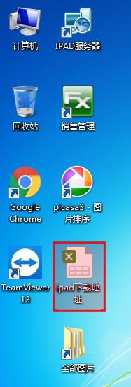
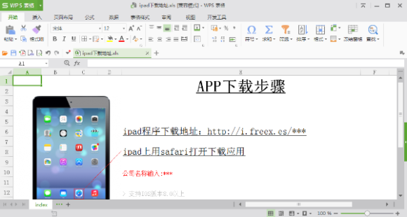
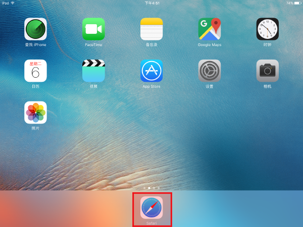
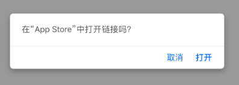
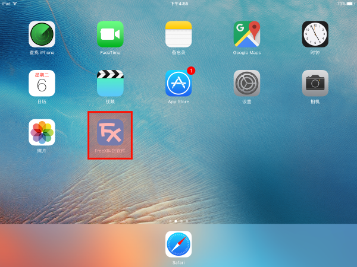

iPad下载叫货程序
2017-03 FreeX
第一步 打开 iPad下载地址
打开桌面上的iPad下载地址如图片中红色区域所示。


第二步 在iPad平板 打开 Safari 浏览器
找到Safari并打开如图片中红色区域所示。

第三步 输入下载地址
在浏览器里输入第一步里的iPad下载地址如图片中红色区域所示。

第四步 从AppStore打开链接
点击打开，就会跳转到AppStore。

第五步 安装完成
在iPad桌面就可以看到FreeX叫货程序如图片中红色区域所示。
